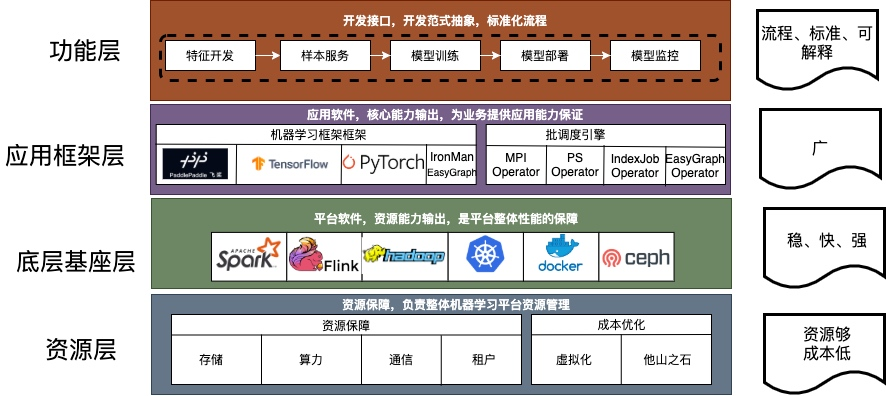
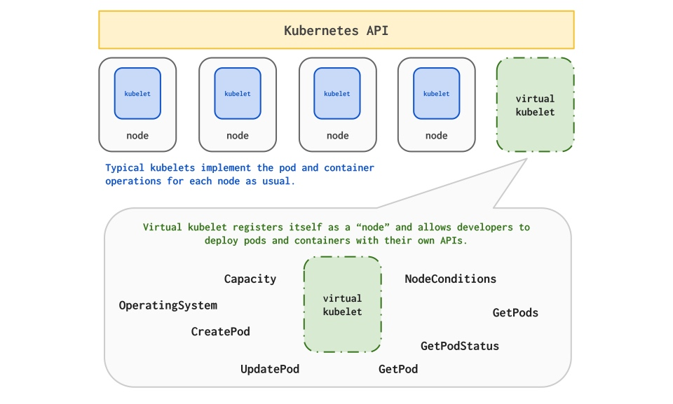
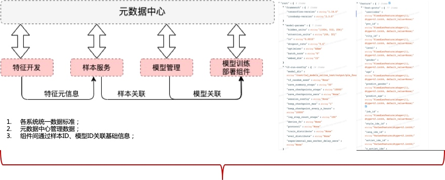
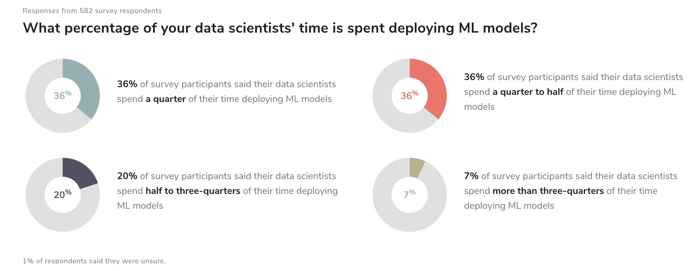
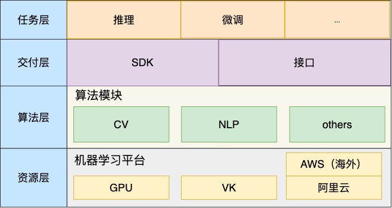

title: 网易云音乐机器学习平台实践
description: 机器学习平台为算法相关工作者提供基础的开发调度环境，为机器学习各个系统提供集成与接入的能力，为各个机器学习相关子系统形成一套标准化流程提供保障。

图片来源：https://ml-ops.org/content/mlops-principles
作者： burness
机器学习平台基础架构
在网易云音乐内部，机器学习平台早期主要承担着包括音乐推荐、主站搜索、创新算法业务在内的核心业务，慢慢地也覆盖包括音视频、NLP等内容理解业务。机器学习平台基础架构如下，目前我按功能将其抽象为四层，本篇文章也会从这四个方面详细描述我们在各个抽象层的具体工作。

资源层:平台核心能力保障
主要为平台提供资源保障与成本优化的能力，资源保障覆盖了包括算力、存储、通信、租户等各个方面，而成本优化目前我们采用虚拟化，提供资源池的动态分配，另外考虑到某些业务突发性的大算力需求，资源层能够快速、有效地从其他团队、平台资源层调取到足够的资源提供给业务使用。本章以VK与阿里云ECI为例，简述云音乐机器学习平台在资源这块的工作：
Visual Kubelet资源
目前网易内部有很多资源属于不同的集群来管理，有很多的k8s集群， 杭研云计算团队开发kubeMiner网易跨kubernetes集群统一调度系统，能够动态接入其他闲置集群的资源使用。过去一段时间，云音乐机器学习平台和云计算合作，将大部分CPU分布式相关的如图计算、大规模离散和分布式训练，弹性调度至vk资源，在vk资源保障的同时，能够大大增加同时迭代模型的并行度，提升业务迭代效率；
平台使用VK资源可以简单地理解为外部集群被虚拟为k8s集群中的虚拟节点，并在外部集群变化时更新虚拟节点状态，这样就可以直接借助k8s自身的调度能力，支持Pod调度到外部集群的跨集群调度。

云音乐平台的CPU算力任务主要包括图计算、大规模离散和分布式训练三类，涉及到 tfjob, mpijob， paddlepaddle几种任务类型，任务副本之间均需要网络通信，包括跨集群执行Pod Exec，单副本规格大概在（4c~8c, 12G~20G）之间； 但是因资源算力不足，任务的副本数以及同时可运行的任务并行度很低，所以各个训练业务需忍受长时间的训练和任务执行等待。接入VK后，能够充分利用某些集群的闲置算力， 多副本、多任务并行地完成训练模型的迭代。
阿里云ECI；
CPU资源可以通过kubeMiner来跨集群调度，但是GPU这块，基本上整个集团都比较紧张，为了防止未来某些时候，需要一定的GPU资源没办法满足。机器学习平台支持了阿里云ECI的调度，以类似VK的方式在我们自己的机器学习平台上调度起对应的GPU资源，如下是云音乐机器学习平台调用阿里云ECI资源，在云音乐机器学习平台上，用户只需要在选择对应的阿里云ECI资源，即可完成对阿里云ECI的弹性调度，目前已有突发性业务在相关能力上使用：


底层基座层：基础能力赋能用户
底层基座层是利用资源层转换为基础的能力，比如 通过spark、hadoop支持大数据基础能力、通过flink支持实时数据处理能力，通过k8s+docker支持海量任务的资源调度能力，这其中我们主要讲下ceph在整个平台的使用以及我们在实践优化中的一些工作。
Ceph
Ceph作为业界所指的一套分布式存储，在机器学习平台的业务中很多使用，比如在开发任务与调度任务中提供同一套文件系统，方便打通开发与调度环境，多读读写能力方便在分布式任务中同用一套文件系统。当然， 从0到1的接入，很多时候是功能性的需求，开源的Ceph存在即满足目标。但是，当越来越多的用户开始使用时，覆盖各种各样的场景，会有不同的需求，这里我们总结Ceph在机器学习平台上的一些待优化点：
- 数据安全性是机器学习平台重中之重功能，虽然CephFS支持多副本存储，但当出现误删等行为时，CephFS就无能为力了；为防止此类事故发生，要求CephFS有回收站功能；
- 集群有大量存储服务器，如果这些服务器均采用纯机械盘，那么性能可能不太够，如果均采用纯SSD，那么成本可能会比较高，因此期望使用SSD做日志盘，机械盘做数据盘这一混部逻辑，并基于此做相应的性能优化；
- 作为统一开发环境，便随着大量的代码编译、日志读写、样本下载，这要求CephFS既能有较高的吞吐量，又能快速处理大量小文件。
针对这些相关的问题，我们联合集团的数帆存储团队，在Ceph上做了比较多的优化：
改进一：设计并实现基于CephFS的防误删系统
当前CephFS原生系统是没有回收站这一功能的，这也就意味着一旦用户删除了文件，那么就再也无法找回该文件了。众所周知，数据是一个企业和团队最有价值的无形核心资产，有价值的数据一旦遭到损坏，对一个企业和团队来说很可能是灭顶之灾。2020年，某上市公司的数据遭员工删除，导致其股价大跌，市值蒸发几十亿港元，更严重的是，合作伙伴对其信任降到了冰点，其后续业绩也遭到了巨大打击。
因此，如何保障数据的可靠性是一个关键问题。但是，CephFS这一开源明星存储产品恰恰缺少了这一环。防误删功能作为数帆存储团队与云音乐共建项目中的重点被提上了日程。经过团队的攻坚，最终实现了回收站这一防误删功能。
新开发的回收站在CephFS中初始化了trashbin目录，并将用户的unlink/rmdir请求通过后端转换成了rename请求，rename的目的地就是trashbin目录。保证了业务使用习惯的一致性和无感。 回收站保持逾期定期清理的机制。恢复上，通过构建回收站内相关文件的目录树，然后rename回收站内的文件至目标位置来进行恢复。
改进二：混合存储系统的性能优化
通过长时间观察分析机器学习平台io状态，发现经常性存在短时间的压力突增情况。对于用户来说，其最关注的就是成本以及AI任务训练时长（存储IO时延敏感）。而目前：对于公司内外部用户，如果是追求性能的用户，数帆存储团队提供基于全闪存盘的存储系统；如果是追求成本的用户，数帆存储团队这边提供基于全机械盘的存储系统。这里我们提供一种兼具成本与性能的存储系统方案，

该架构也算是业界较常用的架构之一，但是有一个问题制约该混部架构的发展，即直接基于Ceph社区原生代码使用该架构，性能只比纯机械盘的集群好一倍不到。因此，数帆存储团队对Ceph代码进行了深度分析与改造，最终攻克了影响性能的两个关键瓶颈点：重耗时模块影响上下文以及重耗时模块在IO核心路径，如下图标红所示：

经过数帆存储团队的性能优化之后，该混部系统性能相较于社区原生版本有了显著提升，在资源充足的情况下，IO时延以及IOPS等性能指标有七八倍的提升，当资源不足且达到限流后，性能也有一倍以上的提升。
改进三：设计并实现了基于CephFS的全方位性能优化
CephFS作为基本的分布式存储，简单易用是优势，但是在很多场景下存在着性能问题：比如业务代码、数据管理、源码编译造成的卡顿、延迟过高；比如用户删除海量数据目录耗时非常久，有时候甚至要达到数天；比如因多用户分布式写模型导致的共享卡顿问题。这些问题严重影响着用户的使用体验。因此，数帆存储团队对性能问题进行了深入研究与改进，除了上面提到的在混合盘场景下的性能优化，我们在CephFS元数据访问以及大文件删除等多方面都进行了性能优化。
- 在大目录删除方面： 我们开发了大目录异步删除功能：用户在日常业务中，经常会遇到需要删除大目录情况。这些目录一般包含几千万个文件，总容量在数个TB级别。现在用户的常规方式是使用Linux下的rm -rf 命令，整个过程耗时非常久，有时甚至超过24小时，严重影响使用体验。因此，用户希望能提供一种快速删除指定目录的功能，且可以接受使用定制化接口。基于此，我们开发了大目录异步删除功能，这样使得大目录的删除对用户来说可以秒级完成；
- 在大文件IO方面：我们优化了大文件写性能，最终使得写带宽可以提升一倍以上，写延时可以下降一倍以上，具体性能指标如下；
- 在优化用户开发环境git和make编译等都很慢方面：用户在容器源码目录中使用git status非常慢，耗时数十秒以上，同时，使用make编译等操作也异常慢，基于该问题，杭州存储组对该问题进行了细致分析：通过strace跟踪简单的git status命令发现，流程中包含了大量的stat, lstat, fstat, getdents等元数据操作，单个syscall的请求时延一般在百us级别，但是数千个（对于Ceph源码项目，大概有4K个）请求叠加之后，造成了达到秒级的时延，用户感受明显。横向对比本地文件系统（xfs，ext4），通常每个syscall的请求时延要低一个数量级（十us级别），因此整体速度快很多。进一步分析发现，延时主要消耗在FUSE的内核模块与用户态交互上 ，即使在元数据全缓存的情况下，每个syscall耗时依然比内核态文件系统高了一个数量级。接下来数帆存储团队通过把用户态服务转化为内核服务后，性能得到了数十倍的提升，解决了用户卡顿的这一体验；
- 元数据请求时延方面：分析发现，用户的很多请求时延较高原因是open，stat等元数据请求时延较高，因此，基于该问题我们采用了多元数据节点的方案，最终使得元数据的平均访问时延可以下降一倍以上；
应用框架层：覆盖大部分机器学习业务的工具能力
应用框架层主要承担业务落地业务时，使用的框架能力，比如众所周知的TensorFlow框架、分布式训练任务能力、大规模图神经网络能力等等，本章将从TensorFlow资源迁移与大规模图神经网络两块工作讲述团队这块的工作：
TensorFlow与资源迁移
考虑到算力资源的不足， 在2021年，我们采购了一批新的算力，A100的机器， 也遇到了一些问题：
- 资源与社区：
- A100等新显卡仅支持CUDA11，官方不支持CUDA10，而官方TensorFlow只有最新版本2.4以上版本支持CUDA11，而现在音乐用的比较多的TF1.X，源码编译无法解决跨版本问题，Nvidia社区仅贡献Nvidia-TensorFlow支持CUDA11；
- TensorFlow版本间差异较大，TF1.X与TF2.X， TF2.4.0以下与TF2.4.0以上差异很大；
- TensorFlow1.X的社区相关问题，如环境、性能，Google官方不予支持；
- 音乐内部机器学习基础架构：
- RTRS目前仅支持TF1.14，目前针对TF1.X，Google不支持CUDA11，Nvidia官方出了Nvidia-TensorFlow1.15来支持，但是这种并不属于官方版本，内部代码更改太多，风险较大；
- 针对目前各个业务组内维护的Java jni 模型推理的情况，如果需要使用新硬件进行模型训练，需要支持至少CUDA11的对应的TF版本（2.4以上）；
- 模型训练侧代码， 目前版本为TF1.12-TF1.14之间；
基于这样的背景， 我们完成机器学习平台TF2.6版本的全流程支持，从样本读写、模型训练、模型线上推理，全面支持TF2.6，具体的事项包括：
- 机器学习平台支持TF2.6以及Nvidia TF1.15两套框架来适配Cuda11；
- 考虑到单A100性能极强，在大部分业务的模型训练中无法充分发挥其性能。因而，我们选择将一张A100切分成更小的算力单元，需要详细了解的可以关注nvidia mig 介绍，可以大大提升平台整体的吞吐率；
- mig的好处，能够大大地提升平台整体的吞吐率，但是A100经过虚拟化之后，显卡实例的调度以及相关的监控也是平台比较复杂的工作；
- 离线训练升级到较高版本之后，推理框架也需要升级，保证兼容TF1.x与TF2.x的框架产生的模型；
通过完成上述事项， 在完成A100 MIG能力的支持之后， 整体从训练速度、推理改造后的数据来看，大大超出预期，离线任务我们使用新显卡1/3的算力可以在常规的任务老版本算力上平均有40%以上的训练速度提升，最高有170%以上的提升，而线上推理性能，通过适配2.6的TensorFlow版本，在保证完全兼容TF1.X的线上版本的同时，获得20%以上的推理性能提升。在A100切分实例上，我们目前提供2g-10gb、3g-20gb、4g-40gb三类显卡实例，覆盖平台日常的任务类型，其他指标如稳定性均大大超过老版本算力。
大规模图神经网络
随着从传统音乐工具软件到音乐内容社区的转变，云音乐依托音乐主站业务，衍生大量创新业务，如直播、播客、K歌等。创新业务既是机遇也为推荐算法同学带来了挑战：用户在创新业务中的行为稀疏，冷启动现象明显；即使是老业务也面临着如下问题：
- 如何为新用户有效分发内容；
- 将新内容有效分发给用户；
我们基于飞桨图学习框架PGL，使用全站用户行为数据构建用户的隐向量表征，刻画用户之间的隐性关系，提供个性化召回、相似挖掘、lookalike 等功能；在实践中，我们遇到了各种难点挑战：
- 难点一：存在多种行为对象、行为类型，用户行为数据量大，近五亿节点（包含用户、歌曲、mlog、播客等），数百亿条边的数据规模；
- 难点二：模型训练难，模型本身参数量巨大，需要大量算力资源来保障模型的训练；
- 难点三：在企业界，落地像图神经网络这类技术时，需要综合考虑成本与收益，其中成本主要包括两个方面：架构改造成本与计算资源成本；
为解决这些难点，我们基于网易云音乐机器学习平台落地了以下具体的技术方案：
- GraphService提供类似于图数据库，基于海量的弱终端资源，提供巨图存储与采样的服务、通过巨图数据加载优化策略，满足不同规模模型以及不同采样方法；
- 通过k8s MPI-Operator实现了超大规模图存储与采样，是实现通用构图方案可用易用必要的基础组件；
- 整合k8s TF-Operator 与MPI-Operator解决模型分布式训练中的图存储、采样与分布式模型计算的问题；
- 通过k8s VK资源与cephfs实现计算存储资源弹性扩容
训练过程会消耗大量计算存储资源，训练结束，这些资源就会闲置，通过cephfs实现存储资源动态扩缩容；通过virtual-kubelet等闲置计算资源引入机器学习平台，实现弹性扩容，按需计费，大大减少大规模分布式任务的训练成本；
功能层：化零为整与化整为零的艺术
功能层主要是机器学习平台做为一处机器学习基础设施，去支持整个机器学习过程的全生命周期，在云音乐，一个标准的机器学习流，主要包括四个部分：
- 数据样本服务；
- 特征算子开发与配置开发；
- 模型训练与离线评估；
- 模型服务开发与部署、持续更新；
而通过整合机器学习流中覆盖的各个部分的不同系统，端到端机器学习平台目的是为了更高效、方便的为算法开发以及相关的用户提供各种能力的支持。而在核心任务之外，机器学习平台也会抽离部分阶段的能力，为包括通过模型服务、模型共享等相关工作提供部分组件的支持；接下来会分别从端到端机器学习平台与ModelZoo两个项目来分享我们在这块的工作：
端到端机器学习平台：化零为整
端对端机器学习平台是通过机器学习平台，抽象出一套能够打通样本处理、特征存取、线上服务开发、代码/数据版本控制系统、线上服务系统推送、abtest系统标准化流程，抽象出相应地接口，为各个机器学习子系统集成至机器学习平台，复用包括容器化、系统互联、弹性资源、监控等核心能力。端对端机器学习平台目的的愿景是提供一种以模型为中心的机器学习开发范式，通过元数据中心，将整个生命周期的相关元数据关联至模型任务，以模型的视角去串联整个机器学习生命周期的各个阶段。为了达到这个目的，我们在以下几个方面完成相应的工作：

样本服务
数据样本收集与预处理，主要涉及大数据系统的对接，早期而言， 数据样本的开发并没有相关的系统支持， 业务同学自己写Spark、Flink任务，进行样本收集、清洗、预处理等过程。因而，联通系统，仅需要机器学习平台本身支持用户开发样本任务的联通，音乐内部业务上游主要使用两部分的数据开发平台：猛犸与自研的Pandora与Magina，在机器学习平台上，支持任务级别的依赖，同时考虑到其他任务的多样性，我们在每一个容器中，提供大数据框架的接入能力，支持Spark、Flink、Hadoop等基础框架。
而通过一段时间的迭代之后，我们通过约束标准的特征使用方式，基于网易云音乐基础的存储套件Datahub，提供一套标准的FeatureStore。在此基础上，标准化业务的样本生成逻辑，用户仅需修改少部分的样本生成模板中的逻辑，即可完成一个标准化的业务样本服务，为用户提供实时、离线的样本生成能力。
特征算子开发与配置开发
特征算子开发与配置开发，是一个标准的机器学习流程必须的过程，也是比较复杂的过程，是样本服务的前置逻辑。在云音乐， 线上推理框架，简称RTRS，抽象出专门的特征处理模块，提供给用户开发特征算子、使用特征算子生成的逻辑。

用户在原始数据处理时通过特征计算DSL语音配置已有算子或者自定义特征处理逻辑，编译成相应地feature_extractor包
<feature_extract_config cache="true" log_level="3" log_echo="false" version="2">
<fea name="isfollowedaid" dataType="int64" default="0L" extractor="StringHit(``item_id, ``uLikeA.followed_anchors)"/>
<fea name="rt_all_all_pv" dataType="int64" default="LongArray(0, 5)" extractor="RtFeature($all_all_pv.f, 2)"/>
<fea name="anchor_all_impress_pv" dataType="int64" default="0" extractor="ReadIntVec($rt_all_all_pv, 0)"/>
<fea name="anchor_all_click_pv" dataType="int64" default="0" extractor="ReadIntVec($rt_all_all_pv, 1)"/>
<fea name="anchor_all_impress_pv_id" dataType="int64" default="0" extractor="Bucket(``anchor_all_impress_pv, ``bucket.all_impress_pv)"/>
<fea name="anchor_all_ctr_pv" dataType="float" default="0.0" extractor="Smooth(``anchor_all_click_pv, ``anchor_all_impress_pv, 1.0, 1000.0, 100.0)"/>
<fea name="user_hour" dataType="int64" extractor="Hour()" default="0L"/>
<fea name="anchor_start_tags" dataType="int64" extractor="Long2ID(``live_anchor_index.start_tags,0L,``vocab.start_tags)" default="0L"/>
</feature_extract_config>
在线上服务或者样本服务里使用，提供给模型引擎与训练任务使用，具体详情可关注云音乐预估系统建设与实践这篇文章
模型服务开发与部署
目前网易云音乐线上的核心业务，主要使用模型服务框架是RTRS，RTRS底层基于C++开发的，而C++的相关应用开发，存在两个比较麻烦的地方：
- 开发环境： 总所周知，机器学习相关离线与线上操作系统不匹配，如何以一种比较优雅的方式提供用户模型开发同时也支持服务开发的能力？ 网易云音乐机器学习平台底层基于K8S+docker，提供定制化的操作系统；
- 依赖库、框架的共享：在进行rtrs服务的开发时， 环境中需要集成一些公共的依赖，比如框架代码、第三方依赖库等等，通过机器学习提供的统一的分布式存储，只需要挂载指定的公共pvc，即可满足相关需求；
模型的部署可简单区分为两个过程：
- 首次模型的部署：首次模型的部分比较复杂，涉及到线上资源申请、环境安装配置等流程，并且在首次模型部署时，需要统一拉取RTRS服务框架，通过载入业务自定义逻辑so包以及模型、配置、数据文件，提供基础的模型服务能力；
- 模型、配置、数据的更新：在首次模型部署之后，由于时间漂移、特征漂移以及种种其他原因，我们会收集足够多的训练样本重新训练模型或者更新我们的配置、词典等数据文件，这个时候，我们通常不是重新发布模型推理服务，而且去动态更新模型、配置、包括词典在内的数据文件等等；
而机器学习平台通过标准化的模型推送组件，适配RTRS的模型部署以及线上服务的更新。
端对端机器学习平台的收益
减少用户参与，提升效率
端对端机器学习平台将核心业务的主要流程通过模型关联在一起，以模型为中心视角，能够有效地利用上下游的基本信息，比如在样本特征，可以通过复用样本服务中生成的特征schema的信息，减少在模型训练、模型推理时的特征输入部分的开发，能大大减少相关的开发工作，通过我们在某些业务的实验，能够将业务从0开发的过程花费的时间从周级别到天级别。
机器学习流程可视化与生命周期数据跟踪
端对端机器学习平台通过统一的元数据中心，将各个阶段的元数据统一管理，提供机器学习流程可视化能力：
 并且通过各个阶段标准化的元数据接入， 能够有效踪机器学习过程各个阶段的生命周期数据以及资源使用情况，如样本使用特征、样本拼接任务的资源使用情况、模型最终上线的各个特征处理方式、模型训练的超参等等：
并且通过各个阶段标准化的元数据接入， 能够有效踪机器学习过程各个阶段的生命周期数据以及资源使用情况，如样本使用特征、样本拼接任务的资源使用情况、模型最终上线的各个特征处理方式、模型训练的超参等等：

ModelZoo： 化整为零
业务背景
下图是对各个公司的机器学习业务模型上线占用时间的一个调查数据的说明，大部分的数据科学家、算法工程师在模型上线上花费过多的时间：

ModelZoo功能分层
符合我们在云音乐内部业务落地的认知，而除了前面我们讨论的端到端的标准化的核心业务的解决方案， 云音乐内部一些算法团队也会对其中的某些功能组件，有很强的需求，比如我们的通用模型服务，用户希望通过易用、高效地部署方式去构建可在实际场景中使用的通用模型，这个就是ModelZoo的由来，在这个之上，我们希望后续通用模型能在流程上打通再训练、微调，将能公开的已部署的模型，直接提供给有需求的业务方，Model的基础功能分层如下：

- 资源层：资源层覆盖机器学习平台所有任务资源，包括GPU、VK资源、阿里云ECI资源；
- 算法层：覆盖包括CV、NLP、以及其他有通用能力需要的能力模块如faiss分布式能力；
- 交付层：主要包括SDK、接口两种交付方式，其中SDK模块用于提供给算法集成开发过程的场景使用，接口用于无算法集成的场景下使用，提供用户自定义模型接口构建、接口提供服务等核心功能；
- 任务层：提供包括推理、微调、重训等核心功能，通过SDK功能、接口功能提供；
ModelZoo进展
ModelZoo到目前为止，我们的工作大概在这几方面：
- 通过K8S支持Serveless的能力，使用合适的镜像如TF Serving、TorchServe，即可对模型做通用的模型服务；
- 基于机器学习平台开，集成在模型部署组件中，提供组件部署通用模型推理的服务；
- 通过我们交付的组件，用户仅需要通过指定模型包（包括部署的一些基础元信息），来部署相应的服务。如果需要额外的前后处理，也支持在torchserve中自定义前后处理的逻辑；
- 在镜像层通过引入mkl编译的镜像、调整session线程数等核心参数，在高qps场景上，rt减少30%；
- 调研openvino、triton，目前由于业务已满足需求以及人力需求，暂无进一步投入，有相关经验的欢迎分享；
总结
以上就是网易云音乐机器学习平台的过去的一些工作，回顾一下，我们分别从“资源层”、“底层框架层”、“应用框架层”、“功能层”来分享相关的部分工作以及进展，机器学习平台因为覆盖的面很广泛，工作看起来比较杂乱，覆盖各种不同的技术栈，并且各项工作的挑战与目标都不一样，还是很有意思的。
本文发布自网易云音乐技术团队，文章未经授权禁止任何形式的转载。我们常年招收各类技术岗位，如果你准备换工作，又恰好喜欢云音乐，那就加入我们 staff.musicrecruit@service.netease.com 。